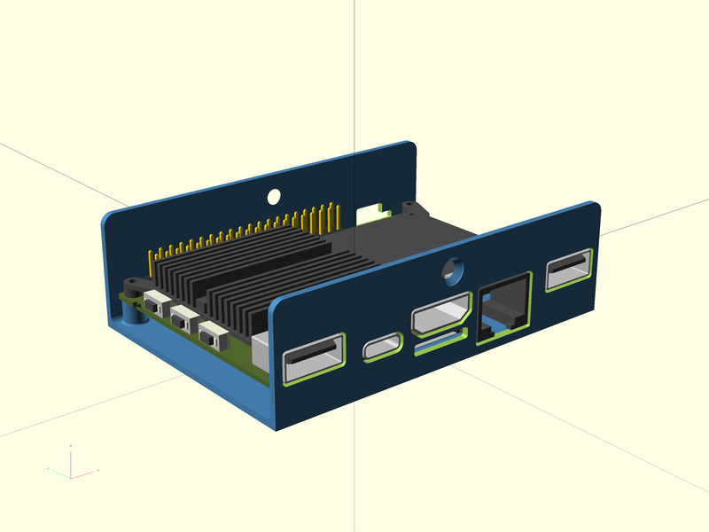
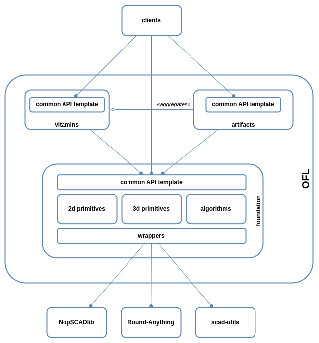

OpenSCAD Foundation Library


OpenSCAD Foundation Library (OFL) is a foundation library for OpenSCAD integrating concepts not included natively in the OpenSCAD language and providing an extendible standardized API base.
Install
- download and expand the library
- modify the OPENSCADPATH Environment Variable to point the lib/ directory of this repo as described in OpenSCAD Library Folder
-
include the needed library file(s) in your OpenSCAD code like in the following example:
include
Documentation
OFL comes with three major components:
- foundation - the core part re-implementing some of the OpenSCAD native 2d/3d modules while adding new ones;
- vitamins - client vitamin modules leveraging the foundation.
- artifacts - printable artifacts built on top of foundation components and vitamins parts;
Architecture
Every library component is accessed through a set of verb-based APIs (Common API Template), even third part libraries eventually used internally.

Disclaimer
The following libraries, used and distributed internally this project, are not part of OFL:
Each of them can be found in the lib/ project directory together with the release and LICENSE notes provided originally.